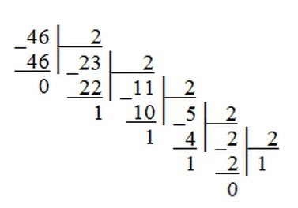
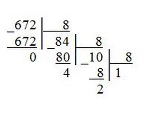
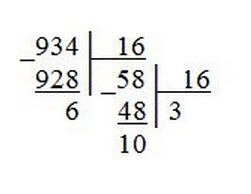
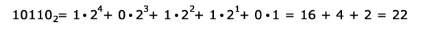

Дополнительные материалы
Здесь будут представление материалы для решения задач,связанных с системами счисления
Таблица переводов систем счисления
| Двоичная | Восмиричная | Десятичная | Шестнадцатиричная |
|---|
| 000 | 0 | 0 | 0 |
| 001 | 1 | 1 | 1 |
| 010 | 2 | 2 | 2 |
| 011 | 3 | 3 | 3 |
| 100 | 4 | 4 | 4 |
| 101 | 5 | 5 | 5 |
| 110 | 6 | 6 | 6 |
| 111 | 8 | 7 | 7 |
| 1000 | 10 | 9 | 8 |
| 1001 | 11 | 10 | 9 |
| 1010 | 12 | 11 | A |
| 101 | 13 | 12 | B |
| 1100 | 14 | 13 | C |
| 1101 | 15 | 14 | D |
| 1110 | 16 | 15 | E |
| 1111 | 17 | 16 | F |
Алгоритмы переводов систем счисления
Перевод из десятичной системы счисления в любую другую
Чтобы перевести десятичное число в систему счисления с другим основанием, нужно это число разделить на основание. Полученное частное снова разделить на основание, и дальше до тех пор, пока частное не окажется меньше основания. В результате записать в одну строку последнее частное и все остатки, начиная с последнего.
Например: 1) переведем десятичное число 46 в двоичную систему счисления. Ответ: 46 = 1011102

2) переведем десятичное число 672 в восьмеричную систему счисления. Ответ: 672 = 12408

3) переведем десятичное число 934 в шестнадцатеричную систему счисления. Ответ: 934 = 3A616

Перевод из любой системы счисления в десятичную
Чтобы выполнить перевод целого числа из любой позиционной системы счисления в десятичную, нужно представить число в виде суммы разрядных слагаемых. Цифры и разрядные единицы записываются в десятичной системе счисления.
Например: переведем двоично число 101102 в десятичную систему счисления. Ответ: 101102 = 22
